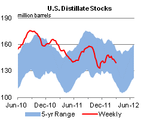

Released: March 7, 2012
Next Release: March 14, 2012
Déjà vu all over again?
Crude oil and motor gasoline prices rose in February 2012 in a strikingly similar way to the price increases during February 2011. In February 2011, West Texas Intermediate (WTI) and Brent crude oil spot prices rose by almost $8 per barrel and $12 per barrel, respectively. This February, WTI and Brent prices increased by $9 per barrel and $10 per barrel. National average regular-grade gasoline retail prices rose by about $0.28 per gallon in February both this year and last year. These observations might lead some to recall the quip made Yogi Berra, the great New York Yankee catcher and wry wit to whom we owe thanks for the title of this week's commentary. However, a further examination shows that the similarity in pricing patterns may hide some significant differences in market dynamics between this year and last year.
On the surface, some of this year's price drivers resemble those seen last year. Geopolitical developments were a significant factor behind last year's February price rise, as the violent uprising in Libya shut down most of the country's oil production and removed a significant stream of high-quality crude supply from the market (see This Week In Petroleum - March 23, 2011, September 14, 2011, and December 7, 2011). Libyan supply is returning to the market, but supply disruptions in other parts of the Middle East and North Africa (MENA) were part of the price story last month -- this time in South Sudan, Yemen, and Syria. In the former Sudan, an unresolved dispute between Sudan and the newly independent South Sudan led the latter to shut in all of its production at the end of January. The U.S. Energy Information Administration (EIA) now projects that total production from Sudan and South Sudan will fall to an average 200 thousand barrels per day (bbl/d) in 2012 from about 430 thousand bbl/d last year, before recovering to 370 thousand bbl/d in 2013. In Yemen and Syria, civil conflict is also taking a toll on oil output. Yemen's production, already impaired by an ongoing outage to the Marib pipeline, was further curtailed in February by a strike at the country's largest oil field. EIA projects that Yemen's production will average 180 thousand bbl/d in 2012, and 200 thousand bbl/d in 2013, down from a pre-crisis level of around 260 thousand bbl/d. In Syria, damage to a major pipeline that feeds one of the country's two refineries has exacerbated production problems. EIA now expects Syria to produce 260 thousand bbl/d in 2012 and recover to 360 thousand bbl/d in 2013, versus 400 thousand bbl/d pre-crisis.
Yet the parallels should not be overstated. Aggregate disruptions from Syria, Yemen and the former Sudan are significantly less than last year's disruption in Libyan exports. And while unrest in the MENA region continues to simmer, these developments are occurring against a strikingly different economic and geopolitical backdrop. As noted in an EIA report issued at the end of February (The Availability and Price of Petroleum and Petroleum Products Produced in Countries Other Than Iran), there is some evidence that the strengthening of international sanctions on Iran, including measures with both immediate and future effective dates, may already be causing some adjustments in oil supply patterns. Geopolitical tensions in the critical Persian Gulf region, and statements by various parties related to those tensions, are other factors being weighed by oil market participants. A string of reductions in refining capacity in the U.S. East Coast and the Caribbean (Potential Impacts of Reductions in Refinery Activity on Northeast Petroleum Product Markets), as well as on the European side of the Atlantic basin, is altering both crude and product market dynamics. Meanwhile, the European economic recovery faces lingering credit issues, notably in Greece, while the U.S. recovery is proving stronger than expected.
The U.S. Energy Information Administration's latest Short-Term Energy Outlook (STEO), released March 6, reflects a higher forecast for crude oil prices than the previous edition. The forecast for the average 2012 WTI crude oil spot price was increased from $100 per barrel in last month's STEO to $106 per barrel. Because of constraints in transporting crude oil from the U.S. midcontinent region and the expected continuing discount for WTI relative to other world crudes (see This Week In Petroleum, November 30, 2011), the increase in the forecast 2012 U.S. average refiner acquisition cost of crude oil is larger, from $105 per barrel to $115 per barrel.
While retail gasoline prices have generally followed the rise in crude oil prices, time will tell whether refinery closures in the Philadelphia area and other parts of the Atlantic Basin will have a further impact on prices. The retail price of regular gasoline increased from $3.44 per gallon on January 30, 2012 to $3.72 per gallon on February 27, 2012. EIA now expects the monthly average regular-grade gasoline retail price to peak in May at $3.96 per gallon, 32 cents per gallon higher than forecast in last month's STEO and 6 cents per gallon higher than May 2011 (Figure 1). There is significant regional variation in the forecast, with average expected prices on the West Coast during the summer driving season running about 25 cents per gallon above the national average and expected prices on the Gulf Coast averaging about 15 cents per gallon lower. Both the STEO and the accompanying Market Prices and Uncertainty Report provide quantified measures of the high level of uncertainty surrounding the price forecast derived from recent futures and options prices.
Recent product price increases are undoubtedly putting a burden on consumers. The current STEO projections for gasoline prices suggest that vehicle fueling costs for the average U.S. household will be about $238 higher in 2012 than in 2011. According to the 2009 National Household Travel Survey (Transportation Energy Data Book, Tables 4.1 and 8.6), U.S. households drove an average 19,850 miles with an average vehicle fuel efficiency of 22.5 miles per gallon. Assuming no change in travel or average fuel economy, the increase in the average annual gasoline retail price (all grades) from $2.83 per gallon in 2010 to $3.58 per gallon in 2011 and a projected $3.85 per gallon in 2012 implies an increase in average annual household expenditures on gasoline from $2,501 in 2010 to $3,159 in 2011 and $3,398 in 2012.
Gasoline and diesel fuel prices continue to rise
The U.S. average retail price of regular gasoline increased more than seven cents this week to reach $3.79 per gallon. This marks the tenth increase in the last eleven weeks. The average price is 27 cents per gallon higher than last year at this time. The Rocky Mountain region led the way, with retail prices in the region jumping almost 14 cents compared to last week. This was the largest increase in that region since May 2008; however, average prices in the region remain the lowest in the country at $3.33 per gallon. The average price in the Midwest was 12 cents higher than last week. The West Coast saw its average gasoline price rise more than seven cents, and prices in the region remain the highest in the country, averaging $4.20 per gallon. The Gulf Coast saw an increase of about a nickel for the week. Rounding out the regions, prices on the East Coast were up about 3 cents over last week, the smallest regional increase.
The national average diesel fuel price rose more than four cents to hit $4.09 per gallon. The diesel price is 22 cents per gallon higher than last year at this time. Diesel prices were up across all regions, with the biggest increase coming in the Rocky Mountains, where prices were almost seven cents higher than last week's average. The Midwest saw its average diesel price increase six cents. West Coast prices climbed about a nickel over week's price, while the East Coast and Gulf Coast both registered increases of about three cents for the week.
U.S. average wholesale heating fuel prices decrease, while residential prices show little change
The U.S. average residential heating oil price decreased by less than 1 cent per gallon during the week ending March 5, 2012, to $4.10 per gallon. This price is 23 cents per gallon higher than the same time last year. The average wholesale heating oil price decreased by almost 7 cents per gallon over the same period to a price just below $3.32 per gallon, 11 cents higher than last year at this time.
The average residential propane price remained flat during the week ending March 5, 2012, over 1 cent per gallon lower than a year ago. The average wholesale propane price decreased by more than 1 cent per gallon to $1.23 per gallon, 23 cents below the March 7, 2011 price of $1.46 per gallon.
Inventories of propane dip slightly
Total U.S. inventories of propane dropped by 0.4 million barrels last week to end at 43.5 million barrels. This stock level is 61 percent higher than the same time last year, due to a warmer heating season along with increased domestic production of propane. The Midwest and East Coast regional inventories each drew 0.3 million barrels, while those in the Rocky Mountain/West Coast region fell 0.1 million barrels. The Gulf Coast region added 0.3 million barrels of propane stocks. Propylene non-fuel-use inventories represented 10.0 percent of total propane inventories.
Text from the previous editions of This Week In Petroleum is accessible through a link at the top right-hand corner of this page.
| Retail Data | Changes From | Retail Data | Changes From | ||||
| 03/05/12 | Week | Year | 03/05/12 | Week | Year | ||
| Gasoline | 3.793 | Heating Oil | 4.100 | ||||
| Diesel Fuel | 4.094 | Propane | 2.867 | ||||
|
|||||||||||||||||||||||||||
| *Note: Crude Oil Price in Dollars per Barrel. | |||||||||||||||||||||||||||
|  | |||||||
| Stocks Data | Changes From | Stocks Data | Changes From | ||||
| 03/02/12 | Week | Year | 03/02/12 | Week | Year | ||
| Crude Oil | 345.7 | Distillate | 139.5 | ||||
| Gasoline | 229.5 | Propane | 43.498 | ||||